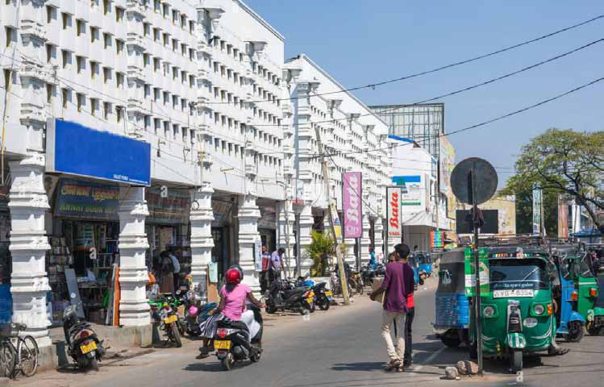
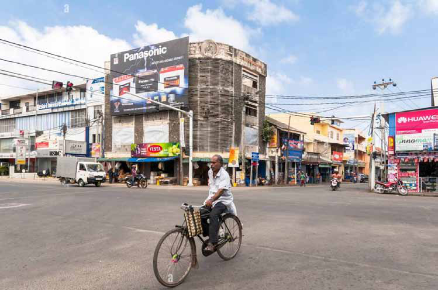
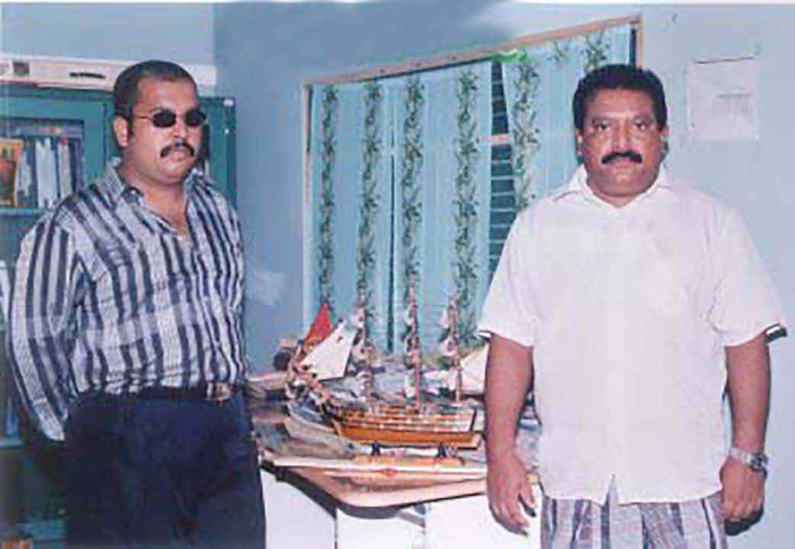
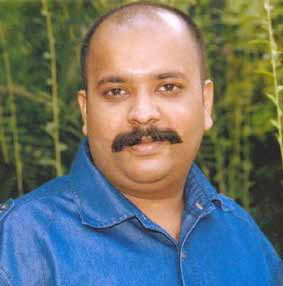
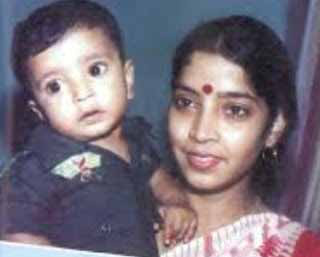
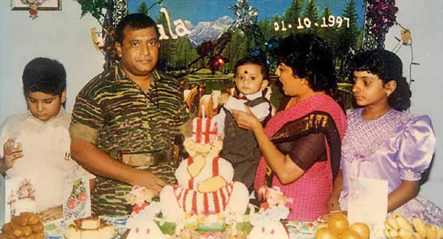
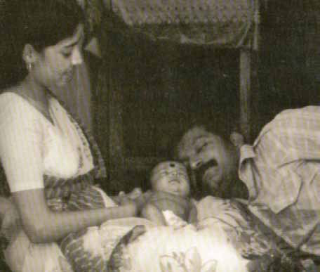
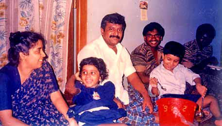

Parking Pandemonium in Jaffna:
Parking Pandemonium in Jaffna:
Jaffna Monitor hellojaffnamonitor@gmail.com 14 Residents and visitors of Jaffna are expressing growing concerns over the recent implementation of parking fees by the Jaffna Municipal Council. Reports indicate that individuals leaving bicycles or motorcycles in the Jaffna town streets, even briefly to visit shops, are being approached by unidentified persons demanding parking fees. This new practice has been especially prevalent in the town area of Jaffna, where individuals unexpectedly confront commuters with receipts ready to collect fees for parking two-wheelers. This has led to significant inconvenience for those needing to make multiple stops across various streets, as they are required to pay a fee at each location. Parking Pandemonium in Jaffna: BY: Our Reporter Jaffna Municipal Council's Parking Fee Fiasco Local

Jaffna Monitor hellojaffnamonitor@gmail.com 15 What's troubling is the lack of clear identification or official authorization of these fee collectors, who claim to represent the Jaffna Municipal Council. This ambiguity raises questions about the legitimacy and management of the collected funds. The issue has escalated recently, reflecting the poor administrative oversight by the Jaffna Municipal Council representatives and relevant government officials. A notable incident occurred during the Nallur Festival, where a major street closure led to increased congestion and distress among attendees. This incident highlighted the arbitrary and disruptive nature of the council's decisions. In a time when the general populace is already burdened by rising prices and increased service taxes, this additional financial imposition for basic activities like parking is seen as unreasonable and exploitative. It echoes the sentiment of adding insult to injury for the already struggling local community. Concerns are mounting over the accountability and transparency of these practices. The responsibility for addressing these issues rests with the Commissioner of the Jaffna Municipal Council. Driven by their frustration, a few residents of Jaffna have jokingly proposed a more orderly approach, suggesting the establishment of official toll booths at the city's gateways, equipped with a transparent and equitable system for entry fees similar to those on highways. This tongue- in-cheek idea is in stark contrast to the current practice of haphazardly imposing parking fees at every possible location. The Jaffna Municipal Council has yet to respond to these concerns, leaving residents and visitors uncertain and frustrated as they navigate the city's streets.

Jaffna Monitor hellojaffnamonitor@gmail.com 16 T he Dravida Munnetra Kazhagam (DMK) youth wing's state conference in Salem, Tamil Nadu, was marked by the attendance of Inbanithi, great-grandson of late Kalaignar Karunanidhi. This event has stirred debate in Tamil Nadu, Sri Lanka, and among the Tamil diaspora, focusing on DMK's leadership succession pattern. Critics highlight a lineage pattern from Karunanidhi to his son Stalin, then to Stalin's son Udhayanidhi, and now Udhayanidhi's son Inbanithi. This issue is notably contentious among supporters of the Liberation Tigers of Tamil Eelam (LTTE) in the diaspora, who have been vocal on platforms like Facebook. Whether right or wrong, in DMK, at least, leaders and other positions are chosen through elections democratically. But has any organisation that fought for Tamil Eelam- a separate country for Lankan Tamils, ever elected its leaders democratically? Especially the LTTE, which I was part of, never had even a hint of democratic principles at any time. The leader of the LTTE, Prabhakaran, who called his organisation a liberation organisation, intended and acted towards making his son Charles Anthony the leader of the LTTE after him. Charles Anthony was The Story of Charles Antony BY: K.S. Lakshmi The LTTE's Struggle with Nepotism: LTTE Leader Prabhakaran with His Elder Son Charles Anthony, Circa 2006

Jaffna Monitor hellojaffnamonitor@gmail.com 17 raised on the organisation's funds from birth. But was he trained like other fighters? Not at all. Every individual who became a part of the Liberation Tigers of Tamil Eelam (LTTE), whether through voluntary enlistment or conscription, underwent a mandatory regimen of basic military training before being deployed to the frontlines. The assignment of leadership roles, such as commanders or other positions of responsibility, was contingent upon an assessment of their combat prowess and effectiveness in the field. Additionally, certain individuals, distinguished by their academic and educational backgrounds, were directly chosen for leadership positions. Nevertheless, these individuals were also required to demonstrate their capabilities in combat situations prior to their appointment. However, Prabhakaran established a specialised division known as the computer wing. He directly appointed his son, Charles Anthony, as the head of this new division. This division of the LTTE was notably allocated greater resources and power compared to other divisions. The circumstances surrounding Charles Anthony's appointment as the leader of the Liberation Tigers of Tamil Eelam (LTTE) 's computer division remain ambiguous. Unlike other members, he did not undergo the standard basic training protocol nor serve in any combat or administrative capacities within the organisation. Despite this lack of conventional experience within the LTTE's structure, in early 2006, the computer division was explicitly established for him. He was then assigned significant responsibilities and resources within this new division. This decision raises questions about the rationale and criteria used for his appointment to this prominent role. The computer unit within the LTTE, primarily tasked with the production of IEDs, including Claymores and other explosives, was more than just a unit focused on computer-related activities. This division, known initially as the Technical Division, was under the adept leadership of Pradeep Master. He was an outstanding fighter, endowed with extensive technical knowledge, and was responsible for significant innovations. Pradeep Master, Mathivathani, Wife of Prabhakaran, with Their Elder Son Charles Anthony, Circa 1986-87 Charles Anthony


Jaffna Monitor hellojaffnamonitor@gmail.com 18 a skilled warrior from the LTTE's fourth division, received his training in India, bringing a wealth of experience to his role. However, his tenure in the division came to an abrupt end when he was sidelined and replaced by Charles Antony following the deliberate highlighting of certain shortcomings in his work. This move led to Pradeep Master being completely excluded from any active role within the organisation. He was 'frozen' in the LTTE's terminology, signifying complete exclusion from duties. Charles Antony was appointed head of the computer division solely because he was Prabhakaran's son. Following his appointment, he showed no respect for any commanders and acted like an authoritarian. Other LTTE commanders hesitated to criticise Charles's actions due to his status as Prabhakaran's son. They even avoided mentioning Charles Antony's name in the organisation, respectfully referring to him as 'Thampi' (younger brother), a name once used for Prabhakaran in the early stages of his military career. However, Charles Antony did not reciprocate any respect and treated all the commanders and fighters as insignificant. Charles formed his own battalion, consisting of about 1,000 fighters, and equipped them with the most modern weapons. At one point, nearly half of the Tigers' resources were under Charles's control. However, despite his position as a designated leader and commander, Charles had no combat experience and never participated in significant battles. Furthermore, he refrained from sending his fighters into battle as well. Velavan, who had once served as Prabhakaran's personal bodyguard, was later appointed in charge of Imran Pandian's battalion and had been acquainted with Charles Antony since the latter was around 12 or 13 years old. During a period of active combat, when Velavan's battalion was facing a shortage of personnel, he held several meetings with Charles Antony to request reinforcements Charles Anthony, Prabhakaran, Younger Son Balachandran, Mathivathani, and Daughter Thuvaraga, on the Occasion of Balachandran's First Birthday

Jaffna Monitor hellojaffnamonitor@gmail.com 19 from Charles's battalion personally. However, Charles consistently refused these requests. Velavan shared this incident with me in a personal conversation, clearly conveying his profound disappointment and heartbreak caused by Charles's behavior. The first battle in which Charles Antony participated was the Thevipuram battle in February 2009, just a few months before the LTTE was militarily vanquished. The battle was led by Sornam, with Charles Antony serving as one of the commanders. During the combat, Charles Antony and his troops fled the battlefield cowardly, leaving behind approximately 500 advanced rifles. This act became a subject of ridicule within the Tigers' circles. I can confidently state that no one in the Tigers' organisation speaks highly of Charles Antony. Prabhakaran appointed his inexperienced, ill-mannered, and unskilled son as his undeclared heir, entrusting him with half of the Tigers' military strength. In this context, the question arises: how can those who follow such a leader be justified in criticising DMK? Currently, within the circles of LTTE supporters, there is a noticeable dependence on the figure of Dwaraka, who is represented as the daughter of Prabhakaran, to revive their movement. I am confident that she is not the actual Dwaraka, but these implications extend far beyond her identity. Using Prabhakaran's purported daughter, real or not, raises significant questions about the LTTE's operational principles. This trend should be viewed as an idolisation of Prabhakaran and his family, deviating from the fundamental ethos of the movement. It brings to light a critical issue: Are LTTE supporters mirroring political parties like the DMK, which openly celebrate the legacies of their leaders? Newborn Charles Anthony with Parents Prabhakaran and Mathivathani Mathivathani, Thuvaraga, Prabhakaran, Kutty (Prabhakaran's Communication Set Operator), and Charles Anthony Note: This piece was written by an ex-leading figure of the LTTE and translated by the Jaffna Monitor team. The author chose to publish under a pseudonym.

